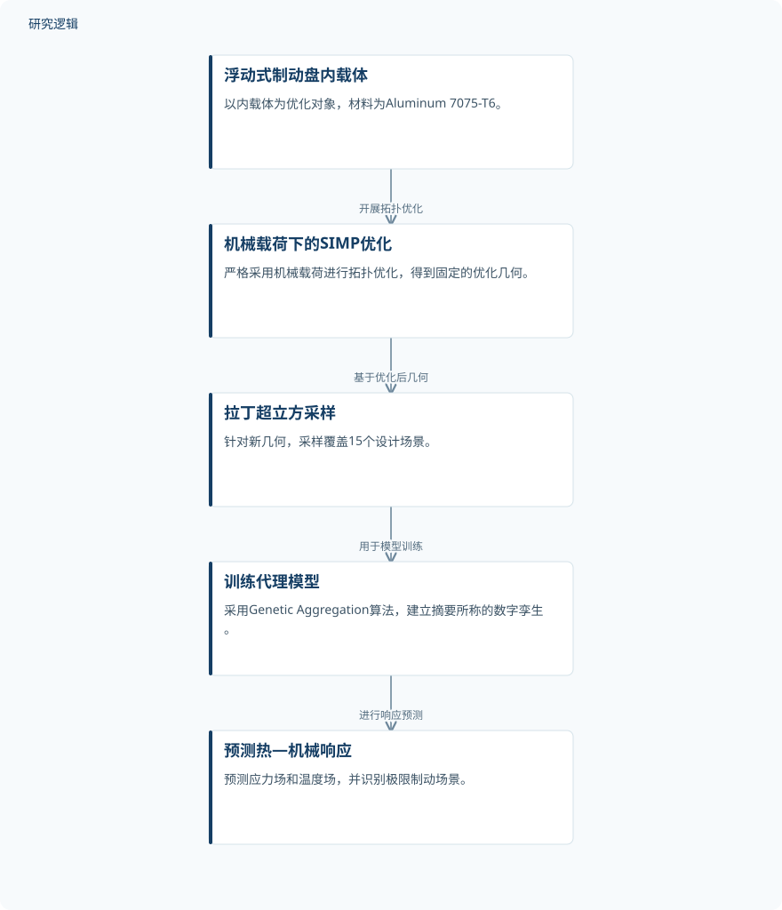

摘要解读
制动盘内支架拓扑优化与机器学习参数化预测模型开发
Topology Optimization of Brake Disc Inner Carrier and Development of a Parametric Predictive Model Using Machine Learning
解读更新 2026-11-10 12:13 · 依据公开摘要整理，未核验全文细节
制动系统轻量化不能只追求减重，还要面对热应力与疲劳安全问题。这项研究将浮动式制动盘内载体的拓扑优化与代理模型预测分开处理，提供了一个观察结构减重与计算效率如何衔接的案例。
文章目录
减轻簧下质量，为何先调整制动盘架构
降低簧下质量对高性能车辆的动力学表现具有重要意义。但摘要指出，传统实心制动盘在热—机械联合载荷下直接进行拓扑优化，往往会出现“热困陷”与结构失效。因此，本研究并非仅对原有结构删减材料，而是提出浮动式制动盘架构，并采用两阶段计算框架。
先固定优化几何，再建立快速预测模型
第一阶段以Aluminum 7075-T6内载体为对象，采用SIMP算法，严格在机械载荷下进行拓扑优化。摘要将这一安排描述为解耦人为热应力，最终得到固定的优化几何；它并不意味着后续评估忽略热效应。
第二阶段针对该新几何建立高保真代理模型，摘要称其为数字孪生，目的是绕开多参数、非线性热—机械有限元分析的高昂计算成本。研究利用拉丁超立方采样覆盖15个设计场景，并采用Genetic Aggregation算法训练模型，以预测实时响应。
依据摘要整理的两阶段计算流程


仅概括摘要明确描述的优化与代理预测关系，并非论文原图，不表示实体试验验证。
下载 SVG图示关系说明
实线表示相邻阶段的信息流，虚线表示跨阶段联系或反馈。
浮动式制动盘内载体 → 机械载荷下的SIMP优化：开展拓扑优化；机械载荷下的SIMP优化 → 拉丁超立方采样：基于优化后几何；拉丁超立方采样 → 训练代理模型：用于模型训练；训练代理模型 → 预测热—机械响应：进行响应预测
内载体减重与热—机械响应预测
摘要报告，内载体质量由0.218 kg降至0.102 kg，减重53%。这一比例明确针对内载体部件，不能扩展为整个制动盘或整套制动系统的减重幅度。
代理模型对应力场和温度场的预测达到R²≈0.9998，并快速识别出极限制动场景。疲劳分析还报告了1.65的安全系数。这些是摘要给出的计算与分析结果，不应直接等同于实车服役验证或实体耐久试验结论。
高拟合指标之外，验证边界仍待核对
仅凭摘要，无法判断15个设计场景的参数范围、训练与独立验证的划分，也无法确定预测精度是否覆盖场景之外的工况。摘要未交代不同优化策略的完整比较、实测样本规模及实体试验验证范围；这些信息缺口不等于论文没有开展相关工作。
疲劳循环次数在所给摘要中写作“106”，其是否涉及指数排版无法确认，不宜自行改写。安全系数所对应的载荷谱、疲劳判据与材料数据也需进一步核对，不能仅凭这一数值推断实际使用寿命。
阅读启发：区分结构设计与服役预测
阅读启发：值得关注的是“先确定几何、再预测响应”的任务划分，而不是将数字孪生直接理解为已实现预测维护。进一步阅读时，可重点核对机械载荷优化如何与后续热—机械评估衔接，以及代理模型的适用参数范围。这些问题有助于判断其对结构设计和疲劳安全评估的实际参考价值。
以上为本站阅读启发与建议，不是论文已验证的结论。